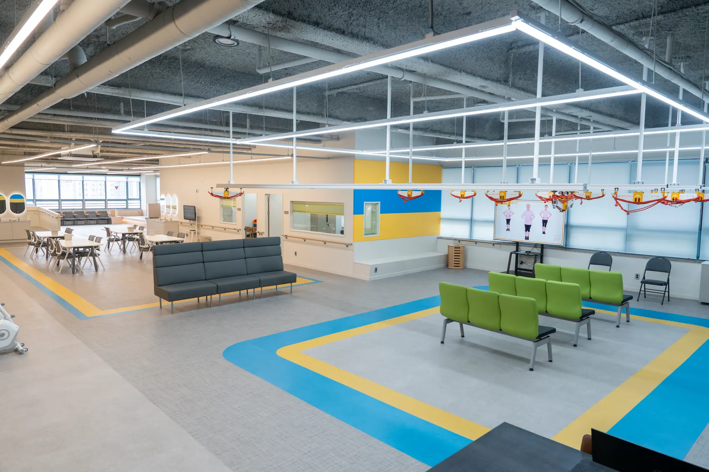

스마트 운동재활 서비스
슬링, 워킹레일, 순환운동을 활용한 안전한 신체 기능 회복 프로그램
남양주 평내호평역 인근 실버런주간보호센터
어르신이 편안하게 머무는 실버런

실버런 주야간보호센터는 스마트 운동재활 시스템과 전문 돌봄 서비스를 통해 어르신의 건강한 일상 회복을 돕습니다.
INFORMATION
센터 선택부터 비용, 송영, 프로그램까지 필요한 내용을 한곳에 정리했습니다.

GREETING
실버런 주야간보호센터
실버런 주야간보호센터
안녕하세요. 실버런 주야간보호센터 대표 정현채입니다.
부모님을 위해 최선의 선택을 고민하시는 그 마음이 얼마나 신중하고 조심스러운지 잘 알고 있습니다.
저희 실버런은
어르신께는 건강한 하루와 움직이는 즐거움을,
가족분들께는 안심하고 일상을 이어갈 수 있는
편안함을 드리고자 합니다.
돌봄은 단순한 보호를 넘어,
어르신의 삶이 다시 활기를 되찾는 과정이라고 생각합니다.
내 부모님을 모시는 마음으로
따뜻하게, 그리고 정성을 다해 함께하겠습니다.
부담 없이 편하게 방문해 주세요.
실버런 주야간보호센터
대표 정현채 드림
슬링, 워킹레일, 순환운동을 활용한 안전한 신체 기능 회복 프로그램

혈압, 혈당, 투약 관리 등 어르신 건강 상태에 맞춘 세심한 관리

치매 예방 활동과 정서적 안정을 돕는 다양한 프로그램

일상 속 편안함을 위한 맞춤형 지원

어르신의 상태를 고려한 균형 잡힌 식사와 위생적인 조리 환경
NAMYANGJU DAY CARE GUIDE
좋은 센터는 이름보다 실제 송영 동선, 어르신 상태에 맞는 프로그램과 건강 관리, 보호자가 확인할 수 있는 하루 기록을 함께 살펴봐야 합니다.
실버런은 평내호평역 인근에서 슬링·워킹레일 운동재활과 간호·인지·생활 지원을 한 공간에서 제공합니다. 방문 상담으로 시설 동선과 프로그램을 직접 확인하실 수 있습니다.
송영 상담 지역: 평내동 · 호평동 · 금곡동 · 화도읍(마석) · 다산동 · 양정동 · 와부읍(덕소)

ADMISSION
입소안내
LONG-TERM CARE INSURANCE
고령이나 노인성 질병 등의 사유로 일상생활을 혼자서 수행하기 어려운 어르신에게 신체활동 또는 가사활동 지원 등 장기요양급여를 제공하는 사회보험제도입니다.
어르신의 노후 건강증진과 생활 안정을 돕고, 가족의 돌봄 부담을 덜어 어르신과 가족 모두의 삶의 질이 향상되도록 시행되고 있습니다.
등급 판정은 주관적인 건강 상태가 아니라, 심신의 기능 상태에 따라 일상생활에서 장기요양이 얼마나 필요한지를 지표화한 장기요양인정 점수를 기준으로 합니다.
| 등급 | 기능 상태 |
|---|---|
| 1등급 | 혼자서는 거의 움직이지 못하는 상태 종일 누워 지내거나 식사 등 혼자 생활하기 어려우신 분 |
| 2등급 | 식사, 배뇨, 환복 등에서 상당 부분 다른 사람의 도움이 필요한 상태 주로 휠체어나 침대에서 생활하시는 분 |
| 3등급 | 일상생활에 다른 사람의 부분적인 도움이 필요한 상태 보행기나 휠체어를 이용해 단거리 이동이 가능하신 분 |
| 4등급 | 심신 기능상태 장애로 일상생활에서 일정 부분 다른 사람의 도움이 필요한 상태 |
| 5등급 | 치매 어르신, 경증 치매 포함 |
65세 이상 거동이 불편한 어르신 또는 65세 미만이라도 치매, 뇌졸중, 파킨슨 등 노인성 질병이 있는 분 중 장기요양등급 또는 인지지원등급 판정을 받은 분이 이용할 수 있습니다.
국민건강보험공단에 방문, 인터넷, 팩스 등을 통해 장기요양인정 신청서를 제출합니다.
공단 담당자가 신청자 가정을 방문해 건강 상태와 생활 기능 상태를 조사합니다.
조사 결과와 의사소견서를 바탕으로 장기요양등급을 판정합니다.
등급과 함께 이용 가능한 서비스와 계획을 안내받습니다.
2026년 수가 기준이며, 본인부담률 및 개인 상황에 따라 실제 납부액은 달라질 수 있습니다.
| 이용시간 | 등급 | 2026년 수가 | 2026년 본인부담 |
|---|---|---|---|
| 8시간 이상 ~ 10시간 미만 | 1 | 69,730 | 10,460 |
| 8시간 이상 ~ 10시간 미만 | 2 | 64,590 | 9,689 |
| 8시간 이상 ~ 10시간 미만 | 3 | 59,640 | 8,946 |
| 8시간 이상 ~ 10시간 미만 | 4 | 58,010 | 8,702 |
| 8시간 이상 ~ 10시간 미만 | 5 | 56,360 | 8,454 |
| 8시간 이상 ~ 10시간 미만 | 인지지원 | 56,360 | 8,454 |

FACILITY
실버런 주야간보호센터
국가인증 스마트 운동재활 전문 시설

편리한 교통과 주차공간을 갖춘 센터입니다. 언제든지 편안하게 방문해주세요.
평내동 · 호평동 · 금곡동 · 화도읍(마석) · 다산동 · 양정동 · 와부읍(덕소)
센터 차량 운행 동선과 이용 시간에 따라 송영 가능 여부를 상담 후 안내드립니다.
Silver 존중하는 마음으로 어르신의 삶과 시간을 존중하는 돌봄
Run 다시 움직이는 힘으로 안전한 운동재활을 통한 신체 기능 회복
Care 든든한 마음으로 보호자가 안심할 수 있는 신뢰의 케어